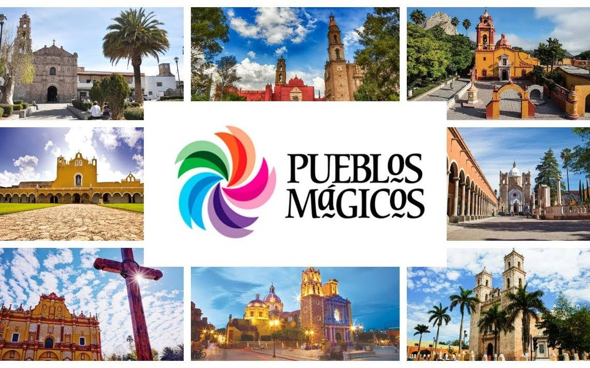

LOS PUEBLOS
MAGICOS

UN PUEBLO MAGICO
ES UNA LOCALIDAD QUE TIENEN ATRIBUTOS SIMBOLICOS, LEYENDAS, HISTORIA,
HECHOS TRASCENDENTES, COTIDIANIDAD, EN FIN MAGIA QUE TE EMANAN EN CADA
UNA DE SUS MANIFESTACIONES SOCIOCULTURALES Y QUE SIGNIFICAN HOY EN DIA
UNA GRAN OPORTUNIDADS PARA EL APROVECHAMIENTO TURISTICO.
Mexico
es un pais lleno de belleza y tradiciones y los pueblos magicos son una
muestra de ello. Estos lugares tienen un encanto especial que lo hace
unicos y atractivos para los visitantes. Los pueblos magicos son
destinados turisticos reconocidos por su encanto, tradiciones y belleza
natural. Estos pueblos han sido designados
AUTORES
ANGELALFREDO CEBALLOS YERVES
JESUS ALBERTO CAAMAL PINA
DANIEL FRANCISCO MEJIA YAH